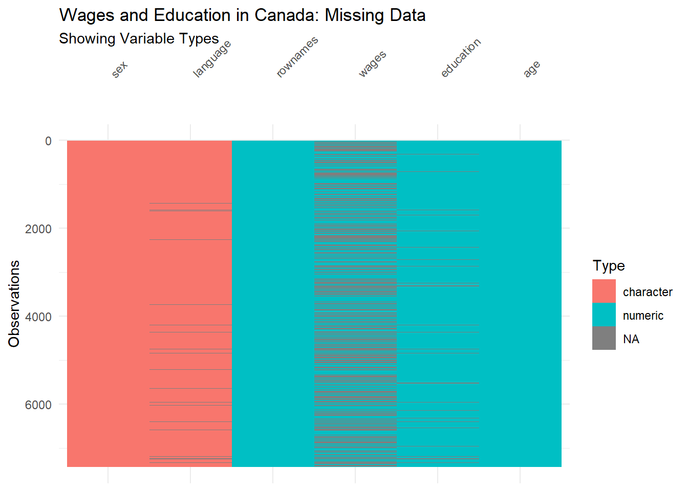
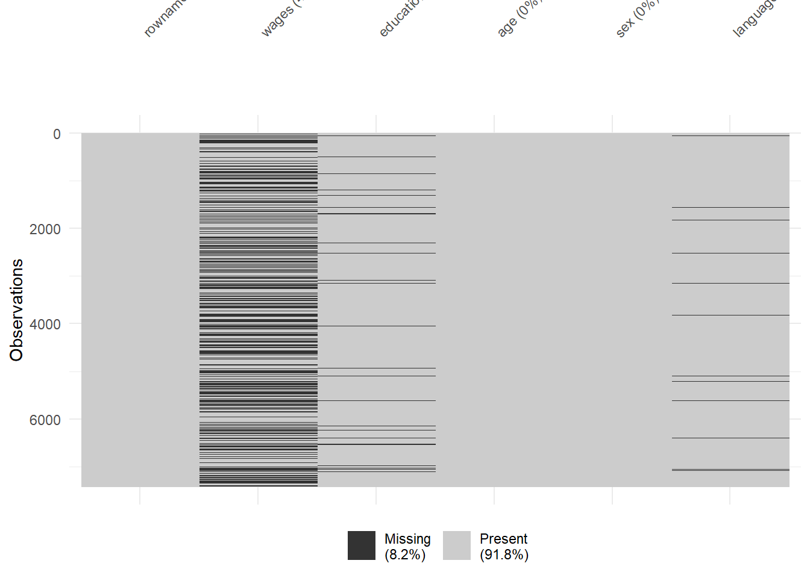
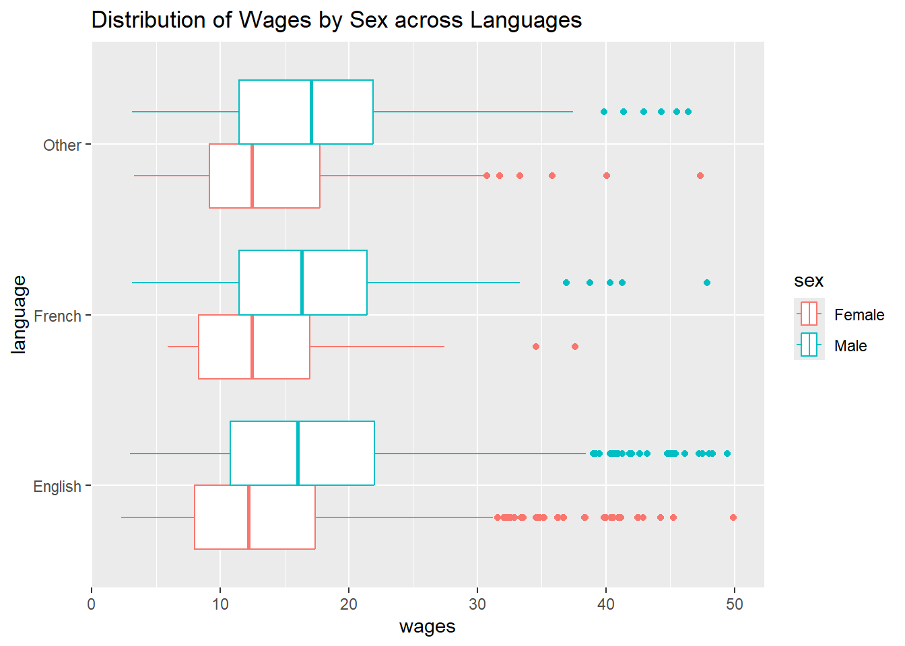
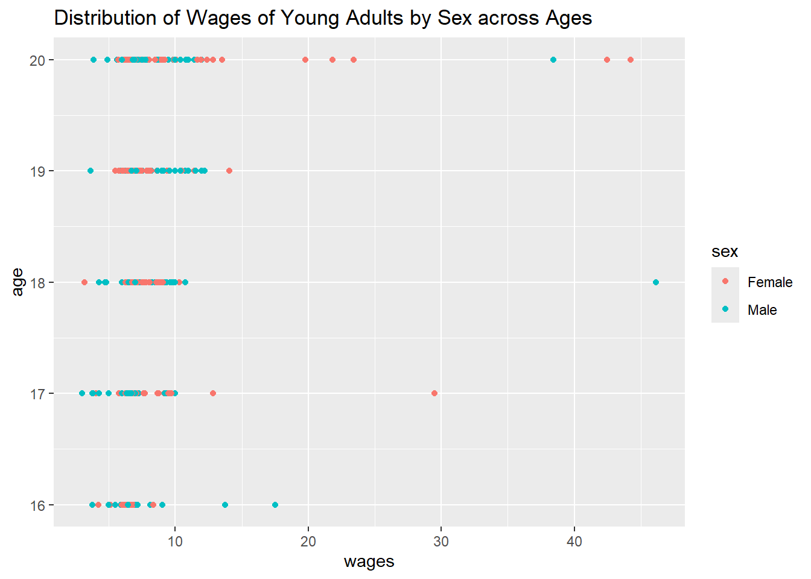
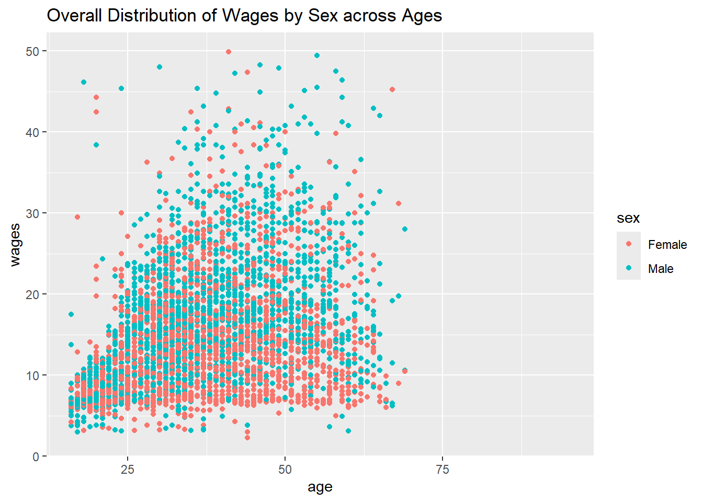

This data set focuses on wages and education levels in Canada.
In our exploratory data analysis (EDA), we have examined the data set through several steps: inspecting the data, making assumptions about the variables, validating those assumptions, summarizing the information, applying filters, visualizing the patterns, and finally, drawing meaningful insights.
Data Dictionary
Qualitative Variables
language: Factor indicating language. Language refers to English, French or Other. “Other” refers to languages that are not English and French.
sex: Factor indicating sex. Sex refers to either Male or Female.
Quantitative Variables
age: age in years.
education: total years of education.
wages: amount of wages earned on an hourly basis in dollars.
Our assumptions before performing EDA:
We expected individuals from “other” language groups to face disadvantages in education and wages compared to English or French speakers.
We also assumed that cultural or community-specific factors might provide additional support for women in “french” and “english” language groups, leading to higher outcomes than women from the “other” language group.
People above the age of 60/retired personnel were included in the data collection process.
Setting up the libraries
library(tidyverse)
── Attaching core tidyverse packages ──────────────────────── tidyverse 2.0.0 ──
✔ dplyr 1.1.4 ✔ readr 2.1.5
✔ forcats 1.0.0 ✔ stringr 1.5.2
✔ ggplot2 4.0.0 ✔ tibble 3.3.0
✔ lubridate 1.9.4 ✔ tidyr 1.3.1
✔ purrr 1.1.0
── Conflicts ────────────────────────────────────────── tidyverse_conflicts() ──
✖ dplyr::filter() masks stats::filter()
✖ dplyr::lag() masks stats::lag()
ℹ Use the conflicted package (<http://conflicted.r-lib.org/>) to force all conflicts to become errors
library(mosaic)
Registered S3 method overwritten by 'mosaic':
method from
fortify.SpatialPolygonsDataFrame ggplot2
The 'mosaic' package masks several functions from core packages in order to add
additional features. The original behavior of these functions should not be affected by this.
Attaching package: 'mosaic'
The following object is masked from 'package:Matrix':
mean
The following objects are masked from 'package:dplyr':
count, do, tally
The following object is masked from 'package:purrr':
cross
The following object is masked from 'package:ggplot2':
stat
The following objects are masked from 'package:stats':
binom.test, cor, cor.test, cov, fivenum, IQR, median, prop.test,
quantile, sd, t.test, var
The following objects are masked from 'package:base':
max, mean, min, prod, range, sample, sum
library(skimr)
Attaching package: 'skimr'
The following object is masked from 'package:mosaic':
n_missing
library(visdat)library(naniar)
Attaching package: 'naniar'
The following object is masked from 'package:skimr':
n_complete
library(janitor)
Attaching package: 'janitor'
The following objects are masked from 'package:stats':
chisq.test, fisher.test
Rows: 7425 Columns: 6
── Column specification ────────────────────────────────────────────────────────
Delimiter: ","
chr (2): sex, language
dbl (4): rownames, wages, education, age
ℹ Use `spec()` to retrieve the full column specification for this data.
ℹ Specify the column types or set `show_col_types = FALSE` to quiet this message.
Wages
# A tibble: 7,425 × 6
rownames wages education age sex language
<dbl> <dbl> <dbl> <dbl> <chr> <chr>
1 1 10.6 15 40 Male English
2 2 11 13.2 19 Male English
3 3 NA 16 49 Male Other
4 4 17.8 14 46 Male Other
5 5 NA 8 71 Male English
6 6 14 16 50 Female English
7 7 NA 12 70 Female English
8 8 NA 14.5 42 Female English
9 9 8.2 15 31 Male English
10 10 NA 10 56 Female English
# ℹ 7,415 more rows
The missing data
visdat::vis_dat(Wages) +ggtitle(label="Wages and Education in Canada: Missing Data", subtitle ="Showing Variable Types")

visdat::vis_miss(Wages)

Observations:
Multiple entries of the wages column contained missing values (NA).
The education and language columns contained some missing values as well, albeit fewer than in the wages column.
How do we handle this missing data?
Because we did not have a data dictionary, we could not be certain whether the NAs represented a meaningful category (for e.g., non-earners in the case of wages, retirement or undisclosed languages). Drawing on a past data set experience, we assumed that empty cells could sometimes encode hidden meanings (e.g., “No”s on all ethnic markers in a previous data set implied “Caucasian”).
However, after careful review, we chose to proceed as follows:
Convert sex and language into factors (from characters).
Rearrange columns to place sex and language before age, education, and wages.
Remove NAs in education, since values like 0 appeared to be intentionally recorded, whereas NA did not seem meaningful. This step removed approximately 121 entries.
Remove NAs in languages, based on the reasoning that special languages (such as sign language) would likely have been coded under “other”.
# A tibble: 7,425 × 6
rownames sex language age education wages
<dbl> <fct> <fct> <dbl> <dbl> <dbl>
1 1 Male English 40 15 10.6
2 2 Male English 19 13.2 11
3 3 Male Other 49 16 NA
4 4 Male Other 46 14 17.8
5 5 Male English 71 8 NA
6 6 Female English 50 16 14
7 7 Female English 70 12 NA
8 8 Female English 42 14.5 NA
9 9 Male English 31 15 8.2
10 10 Female English 56 10 NA
# ℹ 7,415 more rows
# A tibble: 7,125 × 6
rownames sex language age education wages
<dbl> <fct> <fct> <dbl> <dbl> <dbl>
1 1 Male English 40 15 10.6
2 2 Male English 19 13.2 11
3 3 Male Other 49 16 NA
4 4 Male Other 46 14 17.8
5 5 Male English 71 8 NA
6 6 Female English 50 16 14
7 7 Female English 70 12 NA
8 8 Female English 42 14.5 NA
9 9 Male English 31 15 8.2
10 10 Female English 56 10 NA
# ℹ 7,115 more rows
Summarizing the data to get a clearer picture
To get a better idea of the data set, we decided to summarize between different variables.
First, we decided to see the overall picture without language.
We summarized wages, education, and sample counts by sex while dropping missing values.
# A tibble: 3 × 4
language wages education count
<fct> <dbl> <dbl> <int>
1 English 15.5 12.8 5580
2 French 15.5 11.9 486
3 Other 15.9 11.3 1059
Interestingly, while individuals reporting “other” languages had lower average education levels, their mean wages were slightly higher than both English and French speakers.
The sample sizes, however, differed greatly (with English dominating), so these results should be interpreted with caution.
Filtering the Data
We then constructed a box plot of wages by sex across languages, hoping to get a clearer comparison within each language group, and to spot the outliers.
Wages_mod2 %>%gf_boxplot(language~wages, orientation ="y", color =~ sex) %>%gf_labs(title="Distribution of Wages by Sex across Languages")
Warning: Removed 3138 rows containing non-finite outside the scale range
(`stat_boxplot()`).

Across all three language groups, the pattern was consistent:
This wide range suggests that while some in the “other” category earn very low wages (possibly reflecting entry-level or low-skill jobs), others earn significantly higher wages, indicating greater variability in economic outcomes.
Circling back to address gender wage gap, we examined education levels for both genders to see whether there were any deviations causing this.
Education levels between men and women are essentially the same.
This confirms that the gender wage gap cannot be attributed to differences in average educational levels.
Exploring Age, Education and Wages
We plotted a age~wages graph for respondents aged ≤20 (youngest age=16) to get an idea of the distribution of wages.
Wages_mod2 %>%filter(age<=20) %>%gf_point(age~wages, color =~ sex) %>%gf_labs(title="Distribution of Wages of Young Adults by Sex across Ages")
Warning: Removed 214 rows containing missing values or values outside the scale range
(`geom_point()`).

Most Earned Below Minimum Wage Levels (~$10–15)
At Age 20, Females appeared to earn more than Males
At Age 18, A Single Male Outlier Reported Earning ~$45, an extreme deviation from the group.
Inference: Teen workers earn much less, suggesting entry-level or part-time jobs. The gender gap is less pronounced among teens, and outliers suggest exceptional cases (e.g,, maybe they work in family business or have specialized work).
To see if our assumptions made about retirement were true, we filtered the individuals aged 60 and above. Results:
Inference: We can thus validate our initial assumptions of retirement around 60, since many people in this data set continue to not work after the age of 60.
However, for those that do continue working, the highest maximum wage suggests that a subset of older workers continue in high-paying jobs, possibly due to seniority or professional roles.
Plotting wage against age (colored by sex) revealed distinct patterns:
Wages_mod2 %>%gf_point(wages~age, color =~ sex) %>%gf_labs(title="Overall Distribution of Wages by Sex across Ages")
Warning: Removed 3138 rows containing missing values or values outside the scale range
(`geom_point()`).

Females: Wages Peak Around Ages 30–40, then decline gradually afterward
Males: Wages Rise Around Their 30s, continue increasing into the 50s, and remain higher into the 60s
Inference: Contrary to the assumption about women leaving the workforce around their 30s (due to marriage/family building), the data suggests that women actually earn their highest in this period.
The long term divide (men increasing and women decreasing) most likely points to gender-biased differences in career advancement opportunities rather than workforce exits.
We summarized again to understand the wage gap between men and women aged over 50. Results:
Inference: The wage gap widens significantly at older ages, while male wages continue to rise, female wages plateau or decline. This could indicate systemic barriers to advancement for older women, such as lack of promotion into higher-paying senior roles, while men continue to benefit from career seniority.
Next, we wanted to find out how many men vs. women are still in the workforce after 50, and whether the higher average male wages are partly explained by sample size differences.
From our exploratory analysis, it is clear that the gender wage gap persists regardless of language or educational attainment, suggesting that systemic factors outweigh individual qualifications.
While women’s earnings peak in their 30s-40s, they plateau or decline afterward, whereas men’s wages continue to rise steadily into their 50s and 60s, benefiting from seniority and career progression. This long-term divergence points to structural barriers in advancement opportunities for women rather than simple workforce exits.
The pronounced gap within the “Other” language group further suggests that migrant women may be concentrated in lower-paying roles, while men access higher wages. Although the data set does not capture working hours, which could explain some of the disparity through part-time or reduced work linked to family responsibilities, the overall trend shows women consistently earning at low to mid-level wages across their lives.
In contrast, men not only remain in the workforce longer but also continue to progress into higher-paying senior roles, reinforcing the persistent wage divide.